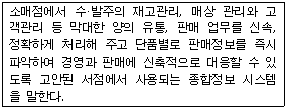
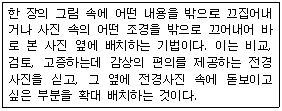
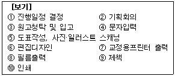
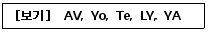

전자출판기능사 (2008-03-30 기출문제)
1과목: 출판론
1. 팝업 북(pup-up book)에 대하여 가장 옳게 설명한 것은?
- 책을 펼치면 그림이 나오거나 입체가 완성되도록 제책한 책
- 비닐로 책의 표지를 만들어 제책한 책
- 구멍을 뚫어 바인더에 끼워서 제책한 책
- 책의 표지와 내지에 네모난 구멍을 뚫어 링을 구멍에 넣고 프레스로 눌러 마무리 제책한 책
(정답률: 94%)

2. 출판의 주요 기능을 가장 옳게 나열한 것은?
- 기록보존, 속보성, 보도, 유통
- 지식전달, 교육, 속보성, 논평
- 기록보존, 문화전달, 교육, 문화창조
- 보도, 논평, 문화창조, 영리추구
(정답률: 93%)
3. 1895년 미국의 월간 문예지인 bookman이 가장 잘 팔리는 여섯 권의 신간서 리스트를 게재한데서부터 생긴 말로 원래 어떤 기간 중에 발행된 책 중에서 예상 이상으로 잘 팔리는 책에 쓰인 말은?
- 베스트셀러
- 패스트셀러
- 스테디셀러
- 핫셀러
(정답률: 93%)
4. 출판기획을 문화적인 창의 활동의 한 분야로 본다면 성공적인 기획성과를 얻기 위해서는 독창적인 아이디어의 개발이 중요하다. 이는 출판기획의 어는 요건을 충족시키는 것인가?
- 시장성
- 적시성
- 창의성
- 적응성
(정답률: 92%)
5. 물체색이 스펙트럼 효과에 의해 빛을 반사하는 각 파장별 세기(비율)를 무엇이라고 하는가?
- 분광반사율
- 시감반사율
- 메타메리즘
- 비시감도
(정답률: 85%)
6. 인쇄판 제조시 감광막의 과열 건조를 발생하는 문제점이라고 볼 수 없는 것은?
- 내쇄력 약화
- 농담얼룩
- 현상불량
- 더러움 k발생
(정답률: 56%)
7. 다음은 무엇에 대한 설명인가?

- POS 시스템
- LAN 시스템
- OCR 시스템
- VAN 시스템
(정답률: 90%)
8. 먼셀표색계에서 먼셀기호 5P 3/12는 무슨 색에 해당하는가?
- 분홍
- 노랑
- 주황
- 보라
(정답률: 73%)
9. 평판인쇄에 사용되는 PS판의 특징이 아닌 것은?
- 판재료 및 작업의 표준화가 쉽다.
- 화상의 선예도가 좋다.
- 온도, 습도의 영향을 거의 받지 않는다.
- 중크롬산감광액을 사용하므로 암반응이 있어 사용유효기간이 길다.
(정답률: 56%)
10. 평면의 금속판에 물과 기름(잉크)의 반발력을 이용하여 인쇄하는 방법은?
- 볼록판 인쇄
- 오프셋 인쇄
- 그라비어 인쇄
- 스크인 인쇄
(정답률: 70%)
11. 눈에 들어와서 유채색 또는 무채색의 색감각을 일으키는 가시복사를 무엇이라 하는가?
- 시지각
- 색지각
- 시자극
- 색자극
(정답률: 45%)
12. 일반적인 그라비어 인쇄의 장점에 대한 설명으로 가장 거리가 먼 것은?
- 제조원가가 타인쇄 방식에 비해 가장 저렴하다
- 고속인쇄가 가능하다
- 크롬을 도금한 판은 내쇄력이 강하다
- 풍부한 농담재현이 가능하다
(정답률: 82%)
13. 제책시 책의 표면가공 처리방법이 아닌 것은?
- 셀롤로이드 입히기
- 비닐필름 입히기
- 왁스칠
- 면지 붙이기
(정답률: 85%)
14. 출판기획에 대한 설명으로 가장 적절한 것은?
- 출판기획을 할 때 다른 비슷한 출판물에 대한 조사는 독창성을 해칠 우려가 있으므로 하지 않는 것이 좋다.
- 출판기획에서는 단기기획뿐만 아니라 장기기획도 함께 고려해야 한다.
- 출판기획의 목표는 오직 베스트셀러를 만드는 것에 두어야 한다.
- 출판기획에서 판매예상 부수에 대한 고려는 통상 빛나가기 때문에 하지 않는 것이 좋다.
(정답률: 92%)
15. 사륙배판(사륙전 16절)의 책 160쪽을 총 10000부 인쇄하려고 한다. 손지율이 5% 라고 한다면 필요한 종이량(사륙전지)은 얼마인가?
- 50연
- 74연
- 82연
- 1⑤연
(정답률: 77%)
16. 그라비어인쇄를 출판, 포장, 특수 그라비어로 분류할 때 출판그라비어 인쇄에 속하지 않는 것은?
- 팜플렛
- 라벨
- 카다로그
- 포스터
(정답률: 85%)
17. 내쇄력을 높이는 목적으로 사용되며, 인쇄판을 제판할 때 부식공정이 이루어져야 하는 제판은?
- PS판
- 난백판
- 평오목판
- 와이프온판
(정답률: 35%)
18. 페이지물의 배치 방법에 해당되지 않는 것은?
- 따로 걸어찍기
- 중앙 걸어찍기
- 같이 걸어찍기
- 넘겨찍기
(정답률: 64%)
19. 일반서점과 비교하여 인터넷 서점의 장점이 아닌 것은?
- 절판이나 재고 관리가 쉽다.
- 할인 판매가 가능하다.
- 서적 진열비나 도난의 위험이 없다.
- 다양한 실물 서적을 직접 접하고 고를 수 있다.
(정답률: 93%)
20. 다음 중 잉크의 건조를 촉진시키기 위해서 잉크에 혼합하는 재료가 아닌 것은?
- 코발트 (Co)
- 망간(Mn)
- 철(Fe)
- 납(Pb)
(정답률: 57%)
2과목: 전자 출판
21. 전자통신출판에 대한 설명으로 옳은 것은?
- 신속한 정보제공과 정보전달이 가능하지만 수정은 전혀 불가능 한다.
- 기존의 종이책과 전자출판물이 정보 공유의 특성이 있다면 전자통신출판물은 정보 보존의 특성이 더욱 강하다.
- 정보의 선택은 장점으로 작용하지만 쌍방향 정보 교환이 불가능 하다.
- 멀티미디어적 정보를 제공할 수 있다.
(정답률: 92%)
22. 하이퍼링크의 구조적 특징에 대한 설명으로 가장 거리가 먼 것은?
- 쌍방향 네트워크 통신을 독자에 제공한다.
- 독자의 의도된 선택에 따라 이동이 가능하다.
- 순차적 접근보다 비순차적 접근이 이루어진다.
- 다양성으로 인하여 정보 습득 능력이 떨어진다.
(정답률: 68%)
23. 연속간행물의 코드화에 해당하는 것은?
- ISDN
- ISSN
- ISBN
- ISDS
(정답률: 67%)
24. 전자출판물 제작과정에 있어서 다른 검색방식보다 안내지도(MAP)에 의한 검색 방법의 가장 큰 장점은?
- 시간 흐름 순으로 자료를 검색해 볼 수 있다.
- 방대한 정보인 경우 독자가 방향을 상실하는 것을 막아준다.
- 정보를 신속하게 수정, 변경할 수 있으며 타임라이라고도 한다.
- 멀티미디어를 지원하고 일반적으로 가장 많이 사용되며 메뉴방식이라고도 한다.
(정답률: 72%)
25. 포스트스크립트 폰트를 이용하여 전산 편집된 내용을 프린터 및 이미지 세터로 출력하기 위해 필수적으로 거쳐야 하는 단계는?
- SCAN DISK
- RIP
- WIN ZIP
- DISK DOCTOR
(정답률: 79%)
26. 다음 중에서 전산편집 작업에 가장 사용되지 않는 프로그램은?
- QuarkXpress
- Illustrator
- FreeHand
- Flash MX
(정답률: 72%)
27. 다음 중 아날로그데이터에 비해 디지털데이터의 장점으로 볼 수 없는 것은?
- 컴퓨터를 활용한 데이터베이스를 구성하기가 쉽다
- 정보를 전송하거나 복제시 정보의 손실이 없어 복원이 가능하다.
- 아날로그 신호를 디지털 신호로 변환할 때 정보의 용량이 감소하므로 별도의 압축 기술이 필요 없다.
- 정보검색이 편리하다.
(정답률: 75%)
28. 웹브라우저에 대한 설명으로 옳지 않는 것은?
- HTML을 사용하여 작성한 텍스트 파일을 정형화하여 표시해 주는 소프트웨어이다
- 각종 언어로 표시된 웹문서를 읽어 들일 수 있다.
- 넷스케이프와 익스플로러 등이 있다
- 웹문서를 쉽게 작성할 수 있는 편리한 기능을 갖추고 있다.
(정답률: 59%)
29. 저작권자의 고유정보를 삽입하여 저작권 침해를 막는 기술을 무엇이라 하는가?
- 디지털라이징(Digitalizing)
- 래스터라이즈(Rasterize)
- 워터마킹(Watermarking)
- 인터프리터(Interpreter)
(정답률: 88%)
30. 다음 중 평면형 스캐너에서 이미지를 읽어 들이는 부분의 명칭은?
- CCD
- 광증배관
- 다이오드 레이저
- RIP
(정답률: 68%)
31. 전자출판물의 특징에 대한 설명 중 틀린 것은?
- 많은 용량을 수록할 수 있다.
- 저작권 보호 문제가 아주 쉽게 해결된다.
- 재편집이나 가공이 용이하다.
- 멀티미디어 기능이 있다.
(정답률: 95%)
32. 전자출판 관련 용어에 대한 옳지 않은 것은?
- DTP : Desk Top Publishing
- CD-R : Compact Disk Read Only Memory
- e-book : electronic book
- XML : extensible made language
(정답률: 68%)
33. 종이문서 레이아웃이나 해상도를 화면상에서 그대로 유지하고자 하는 신문, 잡지, 단행본, 카다로그 등의 디지털 문서에 유용하게 활용할 수 있는 정보 표현 포맷은?
- HTML
- XML
- DOI
(정답률: 84%)
34. DTP시스템 기본 구성도의 순서를 옳게 나타낸 것은?
- 연산장치 → 입력장치 → 출력장치 → 인쇄
- 입력장치 → 연산장치 → 출력장치 → 인쇄
- 입력장치 → 출력장치 → 연산장치 → 인쇄
- 출력장치 → 연산장치 → 입력장치 → 인쇄
(정답률: 74%)
35. 다음 중 컴퓨터 모니터 위에 편집된 화면 그대로의 것을 인쇄 형태로 얻을 수 있다는 의미의 용어는?
- WYSIWYG
- LAYOUT
- GRID
- TYPOGRAPHIC
(정답률: 87%)
36. 다음 중 전자출판물에 들어갈 사진을 수정하려고 할 때 가장 적합한 프로그램은?
- 포토샵(Photoshop)
- 페이지메이커(Pagemaker)
- 플래시(Flash)
- 드림위버(Dream weaver)
(정답률: 90%)
37. 다음 중 하이퍼링크의 가장 복잡한 형태로서, 거미줄 또는 인간 두뇌의 신경조직과 같은 모양으로 정보와 정보를 연결하는 것은?
- 격자형 링크
- 순차적 링크
- 계층적 링크
- 구조적 링크
(정답률: 65%)
38. 제판공정에서 필름 등의 중간 제작물 없이 인쇄용 판을 만들 수 있는 시스템은?
- CTS 시스템
- CTP 시스템
- CTF 시스템
- PS 시스템
(정답률: 68%)
39. 다음 중 전자책으로 이용되는 컴퓨터 언어가 아닌 것은?
- HTML
- XML
- ADSL
- SGML
(정답률: 72%)
40. 다음 중 디지털 저작물 식별자를 무엇이라고 하는가?
- DTP
- DPI
- DOI
(정답률: 72%)
3과목: 전산 편집
41. 오른쪽을 기준으로 왼쪽이 들쭉날쭉하므로 독특하고 흥미로운 실루엣을 보여주지만 글줄의 처음을 찾기가 어려운 글줄 맞추기 방법은?
- 앞줄 맞추기
- 뒷줄 맞추기
- 가운데 맞추기
- 양끝 맞추기
(정답률: 75%)
42. 다음에서 설명하는 사진배치 기법은?

- 몽타주 처리(montage work) 기법
- 드롭아웃 처리(drop out work) 기법
- 아웃 포커스 처리(out focus work) 기법
- 그리드 시스템 처리(grid system work) 기법
(정답률: 64%)
43. 그림 원고를 선택할 때 주의해야 할 사항으로 옳지 않은 것은?
- 단색 그림은 검고 뚜렷한 선으로 확실하게 그려져 있는 것이 좋다.
- 그림 원고를 많이 확대하면 선의 결점이 나타나므로 반드시 최대한 축소하여 사용하여야 한다.
- 문자나 사진이 표현하지 못하는 깊은 내용까지 나타날 수 있으므로 원고 선택시 신중해야 한다.
- 사용하고자 하는 그림 크기의 1.2 ~ 1.5배 크기로 그리는 것이 바람직하다.
(정답률: 66%)
44. 다음 중 인쇄물 지면 편집에서 독자의 시선을 끄는 가장 중요한 요소는?
- 여백
- 사진 또는 그림
- 자간
- 쪽수
(정답률: 100%)
45. 편집에서 사용되는 캡션(caption)의 가장 정확한 의미는?
- 그림이라는 뜻이다.
- 사진과 그림 등을 설명하는 짧은 문장이다.
- 본문을 장식하는 문자의 한 요소이다.
- 책의 발행일과 저작권에 대한 공지사항을 기록한 글이다.
(정답률: 88%)
46. 편집 디자인을 형태별로 분류한 것으로 잘못 연결된 것은?
- 롤 스타일 - 레터헤드, DM
- 시트 스타일 - 명함, 안내장
- 서적 스타일 - 단행본, 매뉴얼, 브로슈어
- 스프레드 스타일 - 카다로그, 팜플렛, 일간신문
(정답률: 47%)
47. 글자꼴(Font)이 없는 특수 목적용 문자로서 회사명이나 제호에 쓰이는 고유한 형태의 문자를 무엇이라고 하는가?
- 로고
- 마크
- 스캐닝
- 일러스트레이션
(정답률: 68%)
48. 다음 ［보기］의 일반적인 출판물 제작 과정을 가장 옳게 나열한 것은?

- ②→①→③→④→⑤→⑥→⑦→⑧→⑩→⑨
- ②→①→③→④→⑤→⑥→⑦→⑧→⑨→⑩
- ①→②→③→④→⑤→⑥→⑦→⑧→⑨→⑩
- ②→①→③→④→⑥→⑤→⑧→⑦→⑨→⑩
(정답률: 50%)
49. 컬러 이미지를 보정할 때, 스캔 받은 이미지에서 필요한 부분만을 남기고 나머지 부분은 잘라 버리는 작업을 무엇이라고 하는가?
- 노이즈
- 무아레
- 디더링
- 크로핑
(정답률: 100%)
50. 책의 구성요소 중 일반적으로 뒷부분에 오는 사항이 아닌 것은?
- 찾아보기(index)
- 참고문헌(bibliography)
- 차례(contents)
- 부록(appenix)
(정답률: 81%)
51. 정기간행물에서 등록번호, 등록년월일, 제호, 간별, 편집인, 인쇄인, 발행인, 발행년월일 등을 표기하도록 명시되어 있는 것을 무엇이라고 하는가?
- 슬로건
- 간기면
- 컬럼명
- 이니셜
(정답률: 68%)
52. 잡지 지면의 구성요소 중 본문의 요점을 간단하게 요약한 문장을 무엇이라고 하는가?
- 리드
- 항목
- 발문
- 놈브르
(정답률: 55%)
53. 페이지 레이아웃 프로그램의 기능 중 ［보기］와 같이 선택된 낱글자사이의 간격을 조정하는 것을 무엇이라고 하는가?

- 스페이싱(spacing)
- 탭(tab)
- 정렬(alignment)
- 커닝(kerning)
(정답률: 69%)
54. 사진원고 교정시 이미지를 밝게 처리하거나 선명도 증가효과 또는 윤곽선 보강 등을 할 수 없는 기능은?
- Brightness
- Desaturation
- Contrast
- Sharpen
(정답률: 63%)
55. 일반적으로 가장 품질이 좋은 종이는 다음 중 어느 것인가?
- 중질지
- 상갱지
- 모조지
- 갱지
(정답률: 49%)
56. 1차적으로 이미지를 스캐닝 하여 편집 과정에서 그라데이션(계조)과 색채를 수정하는 작업으로 모니터와 인쇄로 표현될 색상의 불일치를 찾아 오차를 교정하는 작업은?
- 문자 교정
- 레이아웃 교정
- 컬러 교정
- 용지 교정
(정답률: 81%)
57. 다음 중 세리프(serif)에 대하여 가장 옳게 설명한 것은?
- 글자의 가로나 세로 끝부분에 붙어있는 획(돌기)을 말한다.
- 글자 중에 닫혀진 부분이나 움푹한 공간을 의미한다.
- 손 글씨와 비슷하게 쓰여진 글자를 말한다.
- 글자체를 기울여서 쓴 것을 말한다.
(정답률: 70%)
58. 다음 중 편집디자인의 구성 요소를 가장 옳게 나열한 것은?
- 문자, 그림, 사진, 다이어그램
- 종이, 문자, 사진, 그림
- 점, 선, 면, 원
- 균형, 대비, 통일, 비례
(정답률: 63%)
59. 단간에 대한 설명으로 옳지 않은 것은?
- 단간의 설정 목적은 글 읽기에서 옆단의 간섭을 방지하기 위함이다.
- 일반적으로 단간은 5 ~ 10mm 정도로 본문 2자분 이상정도이다.
- 본문의 서체 크기가 크면 넓게 설정하고 작으면 좁게 설정한다.
- 인위적인 구분을 위해서 단간에 가는 선을 넣어서는 안 된다.
(정답률: 64%)
60. 다음 중 인쇄물의 확인 내용과 가장 거리가 먼 것은?
- 색상의 재현이 정확한지 확인한다.
- 쪽 숫자의 배열이 순서대로인지 확인한다.
- 인쇄 색상과 핀트가 맞았는지 확인한다.
- 전체적인 레이아웃의 형태를 확인한다.
(정답률: 59%)